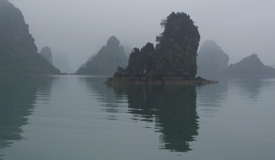
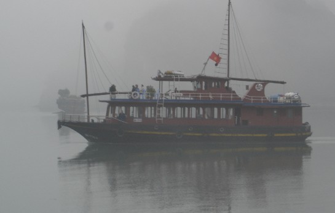
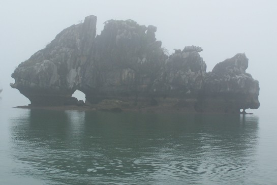
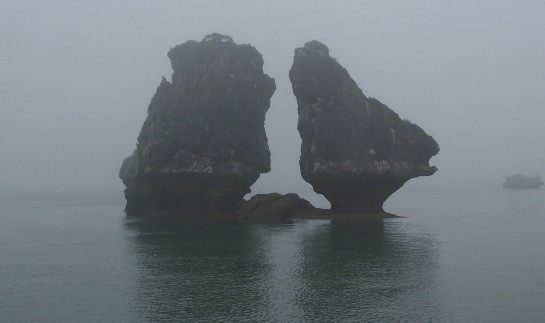
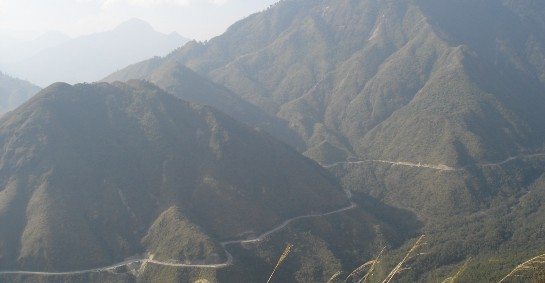
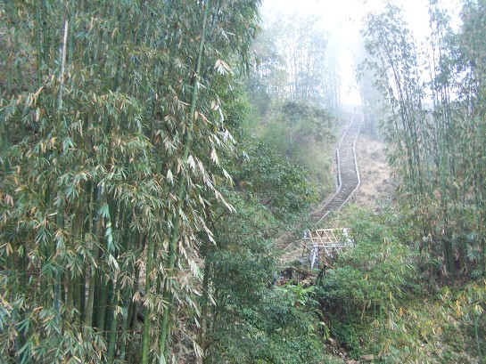
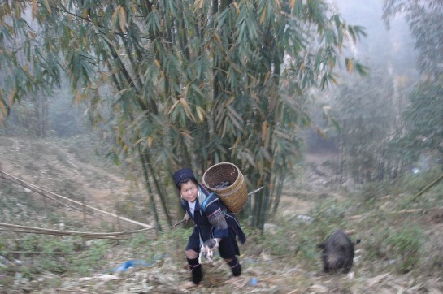
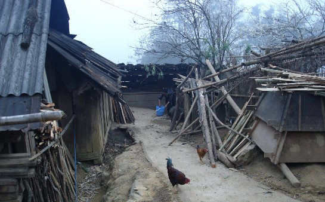

Ha Long Bay is located in the North East of Vietnam. It is rightly considered as one of Vietnam's most
beautiful spots and a UNESCO World Heritage Site.

Thousands of limestone towers rising from its turquoise waters.

The bay's scenery is best seen by boat, although it was misty and foggy when we went.

A Fish Rock formation. Limestone layers and hot and moist climate worked to carve
rocks in various sizes and shapes.

This is supposed to be the Kissing Chicken Rocks but you have to see them at the correct
angle.
Sapa
Sapa is a remote mountain town in North Vietnam, close to the Chinese border. This
quiet town is known for incredible scenery, and home to ethnic minorities and hill tribes.

We flew from Saigon into Hanoi (capital of Vietnam), took an overnighter on an old train,
followed by a long bus ride along curvy, winding, steep and bumpy mountain roads to get there.

Lush green bamboo forest. Did you know that bamboo is the fastest growing plant in the
world and could grow up to 3 feet in a day?

We saw a tribeswoman working and tending to her pot-bellied pig.

She invited us to her humble home. We made friends and felt the local life and culture.